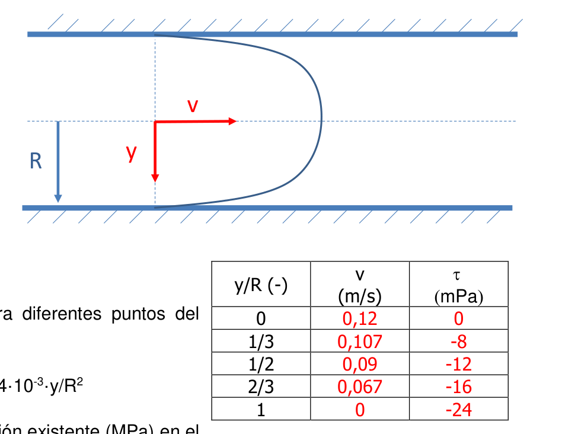
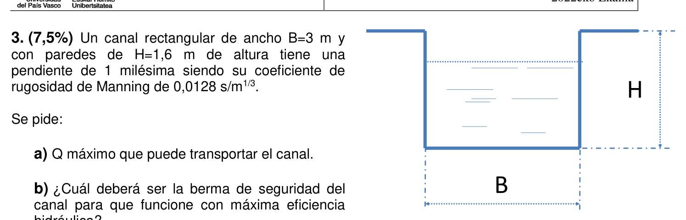
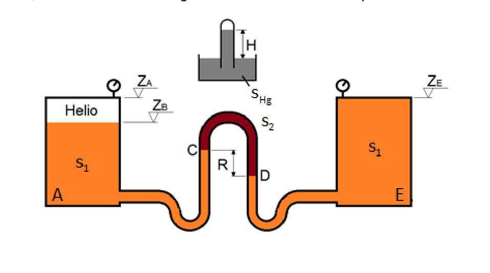
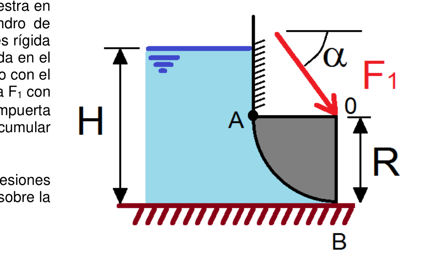
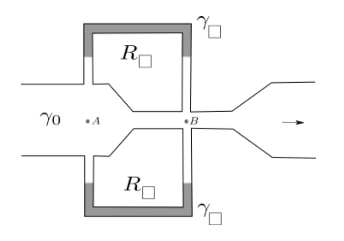
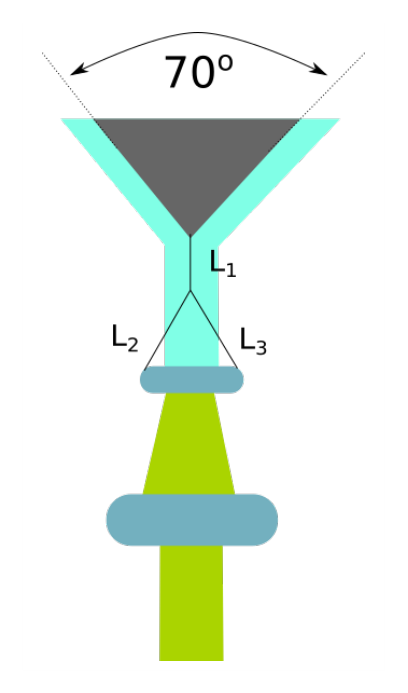
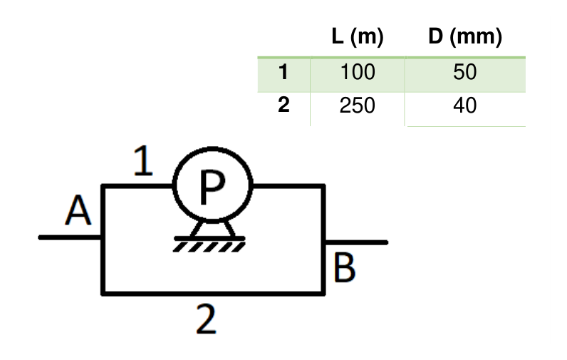
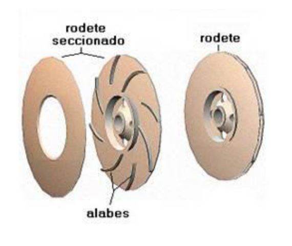

Ejercicio 1 · Flujo laminar en tubería — perfil de velocidades y tensiones

| Variable | Valor | Notas |
|---|---|---|
| $R$ | $0{,}10\ \text{m}$ | Radio interior de la tubería |
| $v_0$ | $0{,}12\ \text{m/s}$ | Velocidad en el eje ($y = 0$) |
| $\mu$ | $0{,}010\ \text{Pa} \cdot \text{s}$ | Viscosidad dinámica del aceite |
| $s$ | $0{,}80$ | Densidad relativa del aceite |
| $\rho$ | $0{,}80 \times 1000 = 800\ \text{kg/m}^3$ | Densidad del aceite |
El flujo de Hagen-Poiseuille describe el flujo laminar, viscoso e incompresible en tubería circular recta. Las hipótesis son: flujo estacionario, eje de simetría cilíndrica, condición de no deslizamiento en la pared ($v(R)=0$) y fluido newtoniano. El perfil resultante es una parábola de revolución con máximo en el eje. La velocidad media es exactamente la mitad de la máxima: $v_{\text{med}} = v_{\max}/2$. La tensión cortante es lineal en $r$: nula en el eje (simetría) y máxima en la pared.
Condición de contorno en el eje ($y=0$): velocidad máxima $v_0 = 0{,}12\ \text{m/s}$:
$$v(0) = a + b \cdot 0^2 = a \quad \Rightarrow \quad a = v_0 = 0{,}12\ \text{m/s}$$Condición de no deslizamiento en la pared ($y=R$): $v(R) = 0$:
$$v(R) = 0{,}12 + b \cdot R^2 = 0 \quad \Rightarrow \quad b = -\frac{0{,}12}{(0{,}1)^2} = -\frac{0{,}12}{0{,}01} = -12\ \text{m}^{-1}\text{s}^{-1}$$ $$\boxed{v(y) = 0{,}12 - 12\,y^2 = 0{,}12\left[1 - \left(\frac{y}{R}\right)^2\right]\ \text{m/s}}$$Ley de Newton de la viscosidad: $\tau = \mu\,dv/dy$
$$\frac{dv}{dy} = 2by = 2 \times (-12) \times y = -24\,y\ \text{s}^{-1}$$ $$\tau(y) = \mu \cdot (-24\,y) = 0{,}010 \times (-24\,y) = -0{,}24\,y\ \text{Pa}$$ $$\boxed{\tau(y) = -\frac{2\mu v_0}{R^2}\,y = -\frac{2{,}4 \times 10^{-3}}{R^2}\,y\ \text{Pa}}$$| $y/R\ (-)$ | $y\ [\text{m}]$ | $v = 0{,}12\,[1-(y/R)^2]\ [\text{m/s}]$ | $\tau = -0{,}24\,y\ [\text{Pa}]\ =\ [\text{mPa}]$ |
|---|---|---|---|
| $0$ | $0$ | $0{,}12\ (= v_0)$ | $0$ |
| $1/3$ | $0{,}0333$ | $0{,}12 \times (1 - 1/9) = 0{,}12 \times 8/9 \approx \mathbf{0{,}107}$ | $-0{,}24 \times 0{,}0333 \approx \mathbf{-8\ \text{mPa}}$ |
| $1/2$ | $0{,}050$ | $0{,}12 \times (1 - 1/4) = 0{,}12 \times 3/4 = \mathbf{0{,}090}$ | $-0{,}24 \times 0{,}050 = \mathbf{-12\ \text{mPa}}$ |
| $2/3$ | $0{,}0667$ | $0{,}12 \times (1 - 4/9) = 0{,}12 \times 5/9 \approx \mathbf{0{,}067}$ | $-0{,}24 \times 0{,}0667 \approx \mathbf{-16\ \text{mPa}}$ |
| $1$ | $0{,}100$ | $0{,}12 \times (1 - 1) = \mathbf{0}\ (v = 0\ \text{en pared})$ | $-0{,}24 \times 0{,}1 = \mathbf{-24\ \text{mPa}}$ |
Ejercicio 2 · Presión en el fondo del océano — fluido incompresible vs compresible
| Variable | Valor | Notas |
|---|---|---|
| $h$ | $1500\ \text{m}$ | Profundidad |
| $\rho_a$ | $1025\ \text{kg/m}^3$ | Densidad en superficie |
| $E_v$ | $2{,}1 \times 10^8\ \text{kgf/m}^2 = 2{,}058 \times 10^9\ \text{Pa}$ | Módulo de elasticidad volumétrica ($\approx 2{,}1 \times 10^9$ Pa) |
| $g$ | $9{,}8\ \text{m/s}^2$ | Aceleración de la gravedad |
Para fluidos ligeramente compresibles, $E_v$ es muy grande comparado con las presiones típicas. La compresión $\Delta\rho/\rho = P/E_v$ es pequeña (≈ 0,7 % a 1500 m), por lo que se puede usar una expansión en serie de primer orden. La corrección de primer orden supone integrar $dP = \rho(P)\,g\,dz$ con $\rho$ lineal en $P$, lo que conduce a la fórmula de corrección cuadrática sobre $P_{\text{inc}}$.
Corrección de primer orden:
$$\frac{P_{\text{inc}}^2}{2\,E_v} = \frac{(15{,}07 \times 10^6)^2}{2 \times 2{,}1 \times 10^9} = \frac{227{,}1 \times 10^{12}}{4{,}2 \times 10^9} = 54{.}071\ \text{Pa} \approx 0{,}054\ \text{MPa}$$ $$P_{\text{comp}} = 15{,}07 + 0{,}054 \approx \boxed{15{,}12\ \text{MPa}}$$Caso a (incompresible): la densidad no varía con la profundidad por hipótesis:
$$\boxed{\rho_a = 1025\ \text{kg/m}^3}$$Caso b (compresible): de la definición de $E_v$: $d\rho/\rho = dP/E_v$ → integrando: $\rho = \rho_0\,e^{P/E_v}$
$$\rho_b = \rho_0 \cdot e^{P_{\text{comp}}/E_v} = 1025 \times e^{15{,}12 \times 10^6\,/\,2{,}1 \times 10^9}$$ $$= 1025 \times e^{0{,}007200} = 1025 \times 1{,}007226 = \boxed{1032{,}56\ \text{kg/m}^3}$$Ejercicio 3 · Canal rectangular a sección plena — Manning y material de revestimiento

| Variable | Valor | Notas |
|---|---|---|
| $B$ | $3\ \text{m}$ | Ancho de la solera |
| $H$ | $1{,}6\ \text{m}$ | Calado (profundidad de flujo) |
| $J$ | $1\ ‰ = 0{,}001$ | Pendiente longitudinal |
| $n$ | $0{,}0128\ \text{m}^{-1/3}\text{s}$ | Coeficiente de rugosidad de Manning |
La fórmula de Manning es empírica y ampliamente usada en canales de superficie libre. El coeficiente $n$ depende exclusivamente de la rugosidad del material: valores bajos corresponden a superficies lisas (hormigón acabado $n \approx 0{,}011$, madera cepillada $n \approx 0{,}012$); valores altos a superficies rugosas (tierra compacta $n \approx 0{,}022$). La berma es el resguardo libre sobre el calado de diseño, que protege frente a oleaje o variaciones imprevistas de caudal.
Para un canal rectangular, la sección de máxima eficiencia hidráulica se alcanza cuando $B = 2\,y_{\text{opt}}$, es decir, el calado óptimo es:
$$y_{\text{opt}} = \frac{B}{2} = \frac{3}{2} = 1{,}5\ \text{m}$$La pared del canal tiene altura $H = 1{,}6\ \text{m}$. La berma de seguridad es la diferencia entre la altura de la pared y el calado óptimo:
$$\text{Berma} = H - y_{\text{opt}} = 1{,}6 - 1{,}5 = \boxed{0{,}1\ \text{m}}$$El canal debe transportar $Q = 10\ \text{m}^3/\text{s}$ con calado $y_{\text{opt}} = 1{,}5\ \text{m}$ (condiciones del apartado b). Calculamos los parámetros hidráulicos:
$$A' = B \times y_{\text{opt}} = 3 \times 1{,}5 = 4{,}5\ \text{m}^2$$ $$P'_{\text{moj}} = B + 2\,y_{\text{opt}} = 3 + 2 \times 1{,}5 = 6{,}0\ \text{m}$$ $$R'_h = \frac{A'}{P'_{\text{moj}}} = \frac{4{,}5}{6{,}0} = 0{,}750\ \text{m}$$ $$R'^{2/3}_h = 0{,}750^{2/3}:\ \ln(0{,}75) = -0{,}2877;\ \tfrac{2}{3}\times(-0{,}2877) = -0{,}1918;\ e^{-0{,}1918} = 0{,}8253$$Despejando $n$ de Manning: $Q = \frac{1}{n}\,R'^{2/3}_h\,J^{1/2}\,A'$
$$n = \frac{R'^{2/3}_h\,J^{1/2}\,A'}{Q} = \frac{0{,}8253 \times \sqrt{0{,}001} \times 4{,}5}{10} = \frac{0{,}8253 \times 0{,}03162 \times 4{,}5}{10} = \frac{0{,}11745}{10} = \boxed{0{,}01174 \approx 0{,}0117\ \text{s/m}^{1/3}}$$Consultando los ábacos de Manning, $n = 0{,}0117$ corresponde a:
| Material | $n$ típico (s/m$^{1/3}$) |
|---|---|
| Hormigón acabado (liso) | $0{,}011 - 0{,}012$ |
| Madera cepillada | $0{,}011 - 0{,}013$ |
Ejercicio 4 · Manómetro diferencial — Helio, líquidos $s = 10$ y $s = 3$

| Variable | Valor | Notas |
|---|---|---|
| $s_1$ | $10$ | Densidad relativa del líquido principal (depósitos y rama derecha manómetro) |
| $s_2$ | $3$ | Densidad relativa del líquido en rama izquierda del manómetro |
| $s_{\text{He}}$ | $9{,}67 \times 10^{-4}$ | Densidad relativa del helio (despreciable) |
| $s_{\text{Hg}}$ | $13{,}6$ | Densidad relativa del mercurio (para P_atm barométrica) |
| $H$ | $735\ \text{mm} = 0{,}735\ \text{m}$ | Altura barométrica en mm Hg → da $P_{\text{atm}}$ |
| $R$ | $30\ \text{cm} = 0{,}30\ \text{m}$ | Lectura del manómetro diferencial (diferencia de niveles entre $s_1$ y $s_2$) |
| $P_E$ | $0{,}3\ \text{bar}$ (manométrica) | Presión manométrica en E (depósito derecho, $z_E = 10\ \text{m}$) |
| $z_A$ | $8\ \text{m}$ | Cota del punto A (en el helio, depósito izquierdo) |
| $z_B$ | $6\ \text{m}$ | Cota de la interfaz del manómetro |
| $z_E$ | $10\ \text{m}$ | Cota del punto E (depósito derecho) |
| $\gamma_1$ | $10 \times 1000 = 10{.}000\ \text{kgf/m}^3$ | Peso específico líquido $s_1$ |
| $\gamma_2$ | $3 \times 1000 = 3{.}000\ \text{kgf/m}^3$ | Peso específico líquido $s_2$ |
| $\gamma_{\text{He}}$ | $9{,}67 \times 10^{-4} \times 1000 = 0{,}967\ \text{kgf/m}^3$ | Peso específico helio (≈ 0) |
| $\gamma_{\text{Hg}}$ | $13{,}6 \times 1000 = 13{.}600\ \text{kgf/m}^3$ | Peso específico mercurio (para P_atm) |
El helio es un gas de peso específico despreciable ($\gamma_{\text{He}} = 0{,}967\ \text{kgf/m}^3 \approx 0$) frente a los líquidos ($\gamma_1 = 10{.}000\ \text{kgf/m}^3$). La presión del helio en A se transmite íntegramente hasta la interfaz helio-líquido sin corrección hidrostática apreciable.
La altura barométrica $H = 735\ \text{mm}\ \text{Hg}$ es la forma clásica de expresar la presión atmosférica: $P_{\text{atm}} = \gamma_{\text{Hg}} \cdot H = 13{.}600 \times 0{,}735 \approx 9{.}996\ \text{kgf/m}^2 \approx 1\ \text{atm}$.
El manómetro diferencial tiene dos líquidos de distinta densidad ($s_1=10$ en rama derecha, $s_2=3$ en rama izquierda). La corrección manométrica es $R(\gamma_1 - \gamma_2)$, que actúa como amplificador de la diferencia de presión.
Todo el cálculo se realiza en sistema técnico: $\gamma\ [\text{kgf/m}^3]$, presiones en $[\text{kgf/m}^2]$, conversión final a $[\text{kgf/cm}^2]$ dividiendo entre 10.000.
Ejercicio 5 · Compuerta curva de cuarto de círculo — reacciones en apoyos

| Variable | Valor | Notas |
|---|---|---|
| $R$ | $2\ \text{m}$ | Radio de la compuerta |
| $b$ | $3\ \text{m}$ | Profundidad (dimensión perpendicular al plano) |
| $F_1$ | $450\ \text{kN}$ | Fuerza exterior aplicada en O (↘ al plano de la compuerta) |
| $\alpha$ | $50°$ | Ángulo de $F_1$ con la horizontal |
| $\gamma$ | $9{.}800\ \text{N/m}^3$ | Peso específico del agua |
Para superficies curvas, la fuerza hidrostática se descompone en: (1) $F_h$ = fuerza horizontal = fuerza sobre la proyección plana vertical (altura $R$, profundidad centroidal $H-R/2$); (2) $F_b$ = fuerza vertical = peso del volumen de agua desde la superficie libre hasta la superficie curva = cuarto de círculo + prisma rectangular superior de altura $H-R$. Ambas fuerzas actúan sobre la cara cóncava (lado del agua).
La articulación A solo proporciona reacción horizontal ($A_y = 0$). $B_y$ es la reacción vertical en el suelo. La condición $B_y = 0$ determina $H_{\max}$: cuando la componente vertical del agua iguala la componente vertical de $F_1$, la compuerta está a punto de despegarse del suelo.
La compuerta ocupa desde la altura $0$ (punto B, suelo) hasta la altura $R$ (punto O). El agua tiene nivel $H > R$.
Componente horizontal — proyección vertical de la compuerta (rectángulo $R \times b$), centroide a profundidad $H-R/2$ de la superficie libre:
$$\boxed{F_h = \gamma\left(H - \frac{R}{2}\right)\cdot R\cdot b}$$Componente vertical — peso del agua directamente sobre la superficie curva:
- Prisma rectangular (de $y=R$ a $y=H$, ancho $R$): volumen $= (H-R)\cdot R\cdot b$
- Cuarto de círculo (de $y=0$ a $y=R$, la propia curva): volumen $= \pi R^2/4\cdot b$
$F_b$ actúa hacia arriba (el agua empuja la cara cóncava desde abajo-izquierda); $F_h$ actúa hacia la derecha.
Para $H_{\max}$ la compuerta está a punto de despegarse del suelo: $B_y = 0$, es decir $F_b(H_{\max}) = F_1\sin\alpha$.
$$F_1\sin\alpha = 450 \times \sin 50° = 450 \times 0{,}7660 = 344{,}7\ \text{kN}$$ $$\gamma\left[\frac{\pi R^2}{4} + (H_{\max}-R)\cdot R\right]\cdot b = 344\,700\ \text{N}$$ $$9800\left[\frac{\pi \times 4}{4} + (H_{\max}-2)\times 2\right]\times 3 = 344\,700$$ $$29\,400\left[\pi + 2H_{\max} - 4\right] = 344\,700$$ $$\pi + 2H_{\max} - 4 = \frac{344\,700}{29\,400} = 11{,}724$$ $$2H_{\max} = 11{,}724 - \pi + 4 = 11{,}724 - 3{,}1416 + 4 = 12{,}582$$ $$\boxed{H_{\max} = 6{,}29\ \text{m}}$$Fuerzas hidrostáticas con $H=3$ m, $R=2$ m, $b=3$ m:
$$F_h = 9800\times\left(3 - \frac{2}{2}\right)\times 2\times 3 = 9800\times 2\times 6 = 117\,600\ \text{N} = 117{,}6\ \text{kN}$$ $$F_b = 9800\times\left[\frac{\pi\times 4}{4} + (3-2)\times 2\right]\times 3 = 9800\times(\pi + 2)\times 3 = 9800\times 5{,}1416\times 3 = 151\,103\ \text{N} = 151{,}1\ \text{kN}$$Componentes de $F_1$:
$$F_{1x} = 450\times\cos 50° = 450\times 0{,}6428 = 289{,}3\ \text{kN}\ (\rightarrow)$$ $$F_{1y} = 450\times\sin 50° = 450\times 0{,}7660 = 344{,}7\ \text{kN}\ (\downarrow)$$Equilibrio horizontal (B solo proporciona reacción vertical, $A_y=0$):
$$\Sigma F_x = 0: \quad F_h + F_{1x} - A_x = 0$$ $$A_x = F_h + F_{1x} = 117{,}6 + 289{,}3 = \boxed{406{,}9\ \text{kN}\ (\leftarrow)} \approx 406{,}85\ \text{kN}$$Equilibrio vertical ($A_y = 0$ — la articulación A solo reacciona horizontalmente):
$$\Sigma F_y = 0: \quad F_b\ (\uparrow) - F_{1y}\ (\downarrow) + B_y\ (\uparrow) = 0$$ $$B_y = F_{1y} - F_b = 344{,}7 - 151{,}1 = \boxed{193{,}6\ \text{kN}\ (\uparrow)} \approx 193{,}56\ \text{kN}$$Ejercicio 6 · Venturímetro con dos manómetros en U — fluido ligero y fluido pesado

| Variable | Descripción |
|---|---|
| $\gamma_0$ | Peso específico del fluido circulante |
| $\gamma_1$ | Peso específico del fluido manométrico superior ($\gamma_1 < \gamma_0$, fluido ligero) |
| $\gamma_2$ | Peso específico del fluido manométrico inferior ($\gamma_2 > \gamma_0$, fluido pesado) |
| $R_1$ | Lectura del manómetro superior (fluido ligero $\gamma_1$) |
| $R_2$ | Lectura del manómetro inferior (fluido pesado $\gamma_2$) |
| $A_1$, $A_2$ | Secciones en la entrada y la garganta del venturímetro |
| $C_d$ | Coeficiente de descarga del venturímetro |
| $\Delta P$ | Diferencia de presión entre entrada y garganta (única, medida por ambos manómetros) |
Configuración del sistema: El venturímetro tiene dos tomas: sección de entrada (A, ancha, alta presión) y garganta (B, estrecha, baja presión). Ambos manómetros en U se conectan entre estas dos tomas y miden la misma $\Delta P = P_A - P_B$.
Manómetro superior (fluido ligero, $\gamma_1 < \gamma_0$): El fluido ligero tiende a ascender; en situación de flujo nulo los meniscos están al mismo nivel. Con flujo no nulo, el fluido ligero sube más en el ramal conectado a la sección de baja presión (garganta B).
Manómetro inferior (fluido pesado, $\gamma_2 > \gamma_0$): El fluido pesado se deposita en el fondo del U. Con flujo no nulo, sube en el ramal conectado a la alta presión (sección A).
Ecuación de Bernoulli: $P_A + \frac{1}{2}\rho_0 v_A^2 = P_B + \frac{1}{2}\rho_0 v_B^2 \Rightarrow \Delta P = \frac{1}{2}\rho_0(v_B^2 - v_A^2)$. Combinando con continuidad ($A_1 v_A = A_2 v_B$) se obtiene el caudal teórico; multiplicando por $C_d$ se obtiene el real.
La figura muestra dos manómetros en U. Con la condición $\gamma_1 < \gamma_0 < \gamma_2$:
- Manómetro superior: contiene el fluido ligero $\gamma_1$ (caja superior = $\gamma_1$, lectura = $R_1$). Al ser más ligero que $\gamma_0$, este fluido ocupa la parte alta del tubo en U. Con flujo no nulo ($P_A > P_B$), el fluido $\gamma_1$ sube en el ramal de la garganta (B) y baja en el ramal de la sección ancha (A): el menisco del lado A desciende y el del lado B asciende respecto al nivel de flujo nulo.
- Manómetro inferior: contiene el fluido pesado $\gamma_2$ (caja inferior = $\gamma_2$, lectura = $R_2$). Al ser más denso, se deposita en la parte baja. Con flujo no nulo, el fluido $\gamma_2$ sube en el ramal de alta presión (A) y baja en el ramal de baja presión (B): el menisco del lado A asciende y el del lado B desciende.
Paso 1 — Ecuación manométrica del manómetro superior (fluido ligero $\gamma_1 < \gamma_0$):
Aplicando la ecuación manométrica entre los puntos A y B a través del manómetro de fluido ligero:
$$\Delta P = P_A - P_B = (\gamma_0 - \gamma_1)\,R_1$$El contraste es $(\gamma_0 - \gamma_1) > 0$ porque $\gamma_1 < \gamma_0$, por lo que $\Delta P > 0$ con $R_1 > 0$. ✓
Paso 2 — Caudal teórico por Bernoulli + continuidad:
Entre sección 1 (ancha, $A_1$, velocidad $v_1$) y garganta 2 ($A_2$, velocidad $v_2$), a la misma altura:
$$P_1 + \tfrac{1}{2}\rho_0 v_1^2 = P_2 + \tfrac{1}{2}\rho_0 v_2^2 \quad\Rightarrow\quad \Delta P = \tfrac{1}{2}\rho_0(v_2^2 - v_1^2)$$Continuidad: $A_1 v_1 = A_2 v_2 \Rightarrow v_1 = v_2 A_2/A_1$. Sustituyendo:
$$\Delta P = \tfrac{1}{2}\rho_0\,v_2^2\!\left(1 - \frac{A_2^2}{A_1^2}\right) \quad\Rightarrow\quad v_2 = \sqrt{\frac{2\,\Delta P}{\rho_0\!\left(1 - A_2^2/A_1^2\right)}} = \frac{A_1}{\sqrt{A_1^2 - A_2^2}}\sqrt{\frac{2\,\Delta P}{\rho_0}}$$ $$Q_{\text{teórico}} = A_2\,v_2 = \frac{A_1 A_2}{\sqrt{A_1^2 - A_2^2}}\sqrt{\frac{2\,\Delta P}{\rho_0}}$$Paso 3 — Caudal real y sustitución de $\Delta P$:
Multiplicando por $C_d$ e introduciendo $\Delta P = (\gamma_0-\gamma_1)R_1$ y $\rho_0 = \gamma_0/g$:
$$\boxed{Q_{\text{real}} = C_d\,\frac{A_1 A_2}{\sqrt{A_1^2 - A_2^2}}\sqrt{\frac{2g\,(\gamma_0-\gamma_1)\,R_1}{\gamma_0}}}$$Esta expresión da el caudal real en función únicamente de la lectura $R_1$ del manómetro superior y los parámetros geométricos y de los fluidos.
Paso 1 — Ecuación manométrica del manómetro inferior (fluido pesado $\gamma_2 > \gamma_0$):
$$\Delta P = (\gamma_2 - \gamma_0)\,R_2$$El contraste $(\gamma_2-\gamma_0) > 0$ porque $\gamma_2 > \gamma_0$. ✓
Paso 2 — Ambos manómetros miden la misma $\Delta P$:
$$(\gamma_0 - \gamma_1)\,R_1 = (\gamma_2 - \gamma_0)\,R_2$$Paso 3 — Despejando el ratio:
$$\boxed{\frac{R_1}{R_2} = \frac{\gamma_2 - \gamma_0}{\gamma_0 - \gamma_1}}$$Verificación de coherencia: como $\gamma_1 < \gamma_0 < \gamma_2$, ambos factores $(\gamma_2-\gamma_0)$ y $(\gamma_0-\gamma_1)$ son positivos, por lo que $R_1/R_2 > 0$. ✓
Si el fluido pesado tiene mayor contraste con $\gamma_0$ que el fluido ligero (es decir, $\gamma_2-\gamma_0 > \gamma_0-\gamma_1$), entonces $R_1 > R_2$: el manómetro de fluido ligero dará mayor lectura que el de fluido pesado para la misma diferencia de presión.
Ejercicio 7 · Peso del cono sostenido por un chorro de agua

| Variable | Valor | Notas |
|---|---|---|
| $v$ | $15\ \text{m/s}$ | Velocidad del chorro (ya contraído) |
| $D$ | $8\ \text{cm} = 0{,}08\ \text{m}$ | Diámetro del chorro (ya contraído) |
| $C_c$ | $0{,}9$ | Coeficiente de contracción (implícito en $D$) |
| $\theta$ | $35°$ | Semiángulo del cono (ángulo total $70°$) |
| $\rho$ | $1000\ \text{kg/m}^3$ | Densidad del agua |
| $g$ | $9{,}8\ \text{m/s}^2$ | Gravedad |
Configuración del sistema: El chorro asciende verticalmente e impacta en el interior del cono (boca hacia abajo, vértice hacia arriba). El agua entra por el vértice con velocidad $v$ hacia arriba y sale por la superficie lateral del cono con velocidad $v$ en dirección paralela a la generatriz, que forma un ángulo $\theta = 35°$ con la vertical. Los alambres solo evitan que el cono salga volando; para que no haya tensión en ninguno de ellos, el peso del cono debe ser exactamente igual a la fuerza ascendente del chorro.
Hipótesis: (1) Flujo incompresible e irrotacional. (2) La magnitud de la velocidad se conserva al rozar la pared del cono (superficie lisa). (3) $D = 8\ \text{cm}$ es el diámetro real del chorro contraído, por lo que no hay que volver a aplicar $C_c$.
Componente vertical de salida: La velocidad de salida tiene dirección paralela a la pared del cono. Como el semiángulo con la vertical es $\theta = 35°$, su componente vertical es $v\cos 35°$ (↑), con componente horizontal saliente que se anula por simetría en el balance vertical.
El diámetro dado ($D = 0{,}08\ \text{m}$) es el del chorro real; calculamos el área directamente:
$$A = \frac{\pi D^2}{4} = \frac{\pi \times (0{,}08)^2}{4} = \frac{\pi \times 0{,}0064}{4} = 5{,}027 \times 10^{-3}\ \text{m}^2$$Volumen de control: el cono y el fluido en contacto con él. Fuerzas externas verticales sobre el volumen de control: fuerza del cono sobre el fluido ($-F_y$, hacia abajo) + peso del fluido (despreciable). El balance de cantidad de movimiento en $y$:
$$F_y = \dot{m}\,(v_{y,\text{entrada}} - v_{y,\text{salida}})$$Velocidad vertical de entrada: $v_{y,\text{entrada}} = +v = +15\ \text{m/s}$ (hacia arriba).
Velocidad vertical de salida: el agua sale a lo largo de la pared del cono a $\theta = 35°$ de la vertical, también hacia arriba, por lo que $v_{y,\text{salida}} = +v\cos 35°$.
$$F_y = \dot{m}\,v\,(1 - \cos 35°)$$ $$\cos 35° = 0{,}81915$$ $$1 - \cos 35° = 1 - 0{,}81915 = 0{,}18085$$ $$F_y = 75{,}40\ \frac{\text{kg}}{\text{s}} \times 15\ \frac{\text{m}}{\text{s}} \times 0{,}18085 = 1131{,}0 \times 0{,}18085 = 204{,}6\ \text{N}$$Para que no haya tensión en los alambres, el peso del cono debe equilibrar exactamente la fuerza ascendente del chorro: $m\,g = F_y$.
$$m = \frac{F_y}{g} = \frac{204{,}6\ \text{N}}{9{,}8\ \text{m/s}^2} = \boxed{20{,}87\ \text{kg}}$$Ejercicio 8 · Análisis dimensional — módulo de elasticidad, viscosidad, presión
| Variable | M | L | T | Descripción |
|---|---|---|---|---|
| $\rho$ | $1$ | $-3$ | $0$ | Densidad del fluido — $[\text{M}\,\text{L}^{-3}]$ |
| $v$ | $0$ | $1$ | $-1$ | Velocidad del fluido — $[\text{L}\,\text{T}^{-1}]$ |
| $L$ | $0$ | $1$ | $0$ | Longitud característica — $[\text{L}]$ |
| $K$ | $1$ | $-1$ | $-2$ | Módulo de elasticidad volumétrica — $[\text{M}\,\text{L}^{-1}\,\text{T}^{-2}] \equiv [\text{Pa}]$ |
| $\Delta P$ | $1$ | $-1$ | $-2$ | Diferencia de presión — $[\text{M}\,\text{L}^{-1}\,\text{T}^{-2}] \equiv [\text{Pa}]$ |
| $\nu$ | $0$ | $2$ | $-1$ | Viscosidad cinemática — $[\text{L}^2\,\text{T}^{-1}]$ |
$n = 6$ variables; $m = 3$ dimensiones fundamentales (M, L, T) → $n - m = 3$ grupos $\Pi$. Variables repetidoras: $\rho$, $v$, $L$.
El teorema $\Pi$ garantiza que toda relación física entre $n$ variables con $m$ dimensiones independientes puede expresarse como una función de $n-m$ grupos adimensionales. Se eligen $m=3$ variables repetidoras ($\rho$, $v$, $L$) que cubran todas las dimensiones fundamentales sin formar ellas solas un grupo adimensional. Cada grupo $\Pi_i$ se construye multiplicando las repetidoras elevadas a potencias desconocidas por la variable no repetidora, e imponiendo adimensionalidad.
Verificación de las repetidoras: $[\rho]=\text{ML}^{-3}$ (aporta M), $[v]=\text{LT}^{-1}$ (aporta T), $[L]=\text{L}$ (aporta L) — cubren M, L, T independientemente. ✓
$[K] = \text{M}^1\,\text{L}^{-1}\,\text{T}^{-2}$. Imponemos adimensionalidad:
$$\Pi_1 = \rho^a\,v^b\,L^c\,K \quad\Rightarrow\quad \text{M}^{a+1}\,\text{L}^{-3a+b+c-1}\,\text{T}^{-b-2} = \text{M}^0\,\text{L}^0\,\text{T}^0$$Sistema de ecuaciones:
$$\text{M:}\ a+1=0 \Rightarrow a=-1$$ $$\text{T:}\ -b-2=0 \Rightarrow b=-2$$ $$\text{L:}\ -3(-1)+(-2)+c-1=0 \Rightarrow 3-2+c-1=0 \Rightarrow c=0$$ $$\boxed{\Pi_1 = \frac{K}{\rho\,v^2}} \quad \text{(número de Cauchy — compresibilidad del fluido)}$$$[\Delta P] = \text{M}^1\,\text{L}^{-1}\,\text{T}^{-2}$ — mismas dimensiones que $K$, por lo que el sistema da los mismos exponentes:
$$\text{M:}\ a+1=0 \Rightarrow a=-1 \qquad \text{T:}\ -b-2=0 \Rightarrow b=-2 \qquad \text{L:}\ c=0$$ $$\boxed{\Pi_2 = \frac{\Delta P}{\rho\,v^2}} \quad \text{(número de Euler — presión vs. presión dinámica)}$$$[\nu] = \text{M}^0\,\text{L}^2\,\text{T}^{-1}$. Imponemos adimensionalidad:
$$\Pi_3 = \rho^a\,v^b\,L^c\,\nu \quad\Rightarrow\quad \text{M}^{a}\,\text{L}^{-3a+b+c+2}\,\text{T}^{-b-1} = \text{M}^0\,\text{L}^0\,\text{T}^0$$ $$\text{M:}\ a=0 \qquad \text{T:}\ -b-1=0 \Rightarrow b=-1 \qquad \text{L:}\ 0+(-1)+c+2=0 \Rightarrow c=-1$$ $$\boxed{\Pi_3 = \frac{\nu}{v\,L} = \frac{1}{Re}} \quad \text{(inverso del número de Reynolds)}$$Ejercicio 9 · Red de tuberías en paralelo — flujo laminar, bomba en rama 1

| Variable | Valor | Notas |
|---|---|---|
| $L_1,\ D_1$ | $100\ \text{m},\ 50\ \text{mm} = 0{,}05\ \text{m}$ | Rama 1 — con bomba |
| $L_2,\ D_2$ | $250\ \text{m},\ 40\ \text{mm} = 0{,}04\ \text{m}$ | Rama 2 — sin bomba |
| $s$ | $1{,}26 \Rightarrow \rho_0 = 1260\ \text{kg/m}^3,\quad \gamma_0 = 12{.}348\ \text{N/m}^3$ | Fluido circulante |
| $\nu$ | $80\ \text{cSt} = 80\times10^{-6}\ \text{m}^2/\text{s}$ | Viscosidad cinemática |
| $E_A$ | $555{,}66\ \text{kJ/m}^3 = 555{.}660\ \text{J/m}^3$ | Energía por unidad de volumen en A |
| $E_B$ | $15\ \text{mcl}\ (s=2{,}52)$ | Energía en B expresada en mcl de fluido con $s=2{,}52$ |
| $P_{\text{bruta}}$ | $1{,}2\ \text{kW} = 1200\ \text{W}$ | Potencia bruta del motor |
| $\eta$ | $54\% = 0{,}54$ | Rendimiento de la bomba |
Configuración: La bomba está solo en la rama 1 (tubería superior). Ambas ramas van de A a B en paralelo. La rama 2 no tiene bomba: el fluido circula por la diferencia de energía natural entre A y B.
Las ramas son independientes: a diferencia del paralelo clásico sin bomba, aquí la rama 1 tiene un aporte extra de energía (la bomba), por lo que $h_{f1} \neq h_{f2}$. Cada rama se analiza con su propio balance de energía de A a B.
Flujo laminar ($Re < 2300$): con $\nu = 80\ \text{cSt}$ el fluido es muy viscoso → se usa Hagen-Poiseuille, donde $h_f$ es lineal en $Q$ → la ecuación de la rama 1 resulta cuadrática en $Q_1$.
Caudal en B: $Q_B = Q_1 + Q_2$ (confluencia de ambas ramas en el nudo B).
Punto A — energía por unidad de volumen → altura piezométrica:
$$H_A = \frac{E_A}{\gamma_0} = \frac{555{.}660\ \text{J/m}^3}{1260 \times 9{,}8\ \text{N/m}^3} = \frac{555{.}660}{12{.}348} = 45{,}00\ \text{m}$$Punto B — 15 mcl con $s_B = 2{,}52$, convertido a metros del fluido circulante ($s_0 = 1{,}26$):
$$H_B = 15\ \text{m} \times \frac{s_B}{s_0} = 15 \times \frac{2{,}52}{1{,}26} = 15 \times 2 = 30{,}00\ \text{m}$$Diferencia de energía disponible: $\Delta H = H_A - H_B = 45 - 30 = 15\ \text{m}$. Como $\Delta H > 0$, el flujo natural va de A a B en ambas ramas.
No hay bomba en la rama 2; toda la diferencia de energía se invierte en pérdidas:
$$H_A - H_B = h_{f2} = R_2\,Q_2$$ $$Q_2 = \frac{H_A - H_B}{R_2} = \frac{15}{32{.}484} = 4{,}618\times10^{-4}\ \text{m}^3/\text{s} = 0{,}462\ \text{l/s}$$Verificación laminar: $Re_2 = \dfrac{4\,Q_2}{\pi\,D_2\,\nu} = \dfrac{4 \times 4{,}618\times10^{-4}}{\pi \times 0{,}04 \times 80\times10^{-6}} = \dfrac{1{,}847\times10^{-3}}{1{,}005\times10^{-5}} = 184 \ll 2300$ → laminar ✓
Bernoulli de A a B a través de la rama 1 con bomba de altura manométrica $H_m$:
$$H_A + H_m - R_1\,Q_1 = H_B \quad\Rightarrow\quad H_m = (H_B - H_A) + R_1\,Q_1 = -15 + 5322\,Q_1$$Potencia útil de la bomba:
$$P_{\text{util}} = \eta\,P_{\text{bruta}} = 0{,}54 \times 1200 = 648\ \text{W}$$ $$P_{\text{util}} = \rho_0\,g\,Q_1\,H_m = 12{.}348 \times Q_1 \times (-15 + 5322\,Q_1)$$Igualando:
$$648 = 12{.}348\,(-15\,Q_1 + 5322\,Q_1^2)$$ $$\frac{648}{12{.}348} = -15\,Q_1 + 5322\,Q_1^2$$ $$0{,}05249 = -15\,Q_1 + 5322\,Q_1^2$$ $$5322\,Q_1^2 - 15\,Q_1 - 0{,}05249 = 0$$Fórmula cuadrática:
$$Q_1 = \frac{15 + \sqrt{15^2 + 4 \times 5322 \times 0{,}05249}}{2 \times 5322} = \frac{15 + \sqrt{225 + 1117{,}5}}{10{.}644} = \frac{15 + \sqrt{1342{,}5}}{10{.}644}$$ $$\sqrt{1342{,}5} = 36{,}64$$ $$Q_1 = \frac{15 + 36{,}64}{10{.}644} = \frac{51{,}64}{10{.}644} = 4{,}852\times10^{-3}\ \text{m}^3/\text{s} = \boxed{4{,}85\ \text{l/s}}$$Comprobación: $H_m = -15 + 5322 \times 4{,}852\times10^{-3} = -15 + 25{,}81 = 10{,}81\ \text{m}$
$$P_{\text{util}} = 12{.}348 \times 4{,}852\times10^{-3} \times 10{,}81 = 647{,}6\ \text{W} \approx 648\ \text{W}\ \checkmark$$Verificación laminar: $Re_1 = \dfrac{4\,Q_1}{\pi\,D_1\,\nu} = \dfrac{4 \times 4{,}852\times10^{-3}}{\pi \times 0{,}05 \times 80\times10^{-6}} = \dfrac{1{,}941\times10^{-2}}{1{,}257\times10^{-5}} = 1544 < 2300$ → laminar ✓
En el nudo B confluyen ambas ramas; por continuidad:
$$Q_B = Q_1 + Q_2 = 4{,}85 + 0{,}462 = \boxed{5{,}31\ \text{l/s}}$$Ejercicio 10 · Turbomáquinas — preguntas teóricas breves

- Inyector (tobera con aguja reguladora): convierte la energía de presión del agua en energía cinética, formando un chorro de alta velocidad. Hay uno o varios inyectores según la potencia requerida.
- Deflector de seguridad: desvía el chorro fuera de las cucharas en caso de desconexión brusca (evita embalamiento), sin necesidad de cerrar el inyector rápidamente.
- Rodete con cucharas (álabes): disco giratorio provisto de cucharas bilobuladas. Cada cuchara divide el chorro en dos semichorro que se desvían casi 180°, extrayendo la máxima cantidad de movimiento.
- Carcasa de protección: no está a presión; recoge el agua que sale de las cucharas y la conduce al canal de descarga.
- Eje, rodamientos y generador: transmiten la potencia mecánica al alternador.
En una turbina de acción toda la energía disponible se convierte en energía cinética del fluido antes de llegar al rodete (en el inyector), de modo que:
- La presión en la entrada y en la salida de cada cuchara es la misma (presión atmosférica): la caída de presión a través del rodete es nula.
- El rodete solo recibe el impulso (acción) del chorro; el momento se transfiere únicamente por cambio de cantidad de movimiento del chorro libre.
Contraste: en turbinas de reacción (Francis, Kaplan) hay una diferencia de presión entre entrada y salida del rodete → parte de la energía extraída es de origen estático (presión).
El distribuidor (conjunto de paletas directrices orientables, también llamado «vasos distribuidores» o «directrices»):
- Regula el caudal: al girar las paletas se varía la sección de paso del flujo y, por tanto, el caudal que entra al rodete — principal mecanismo de regulación de potencia.
- Orienta el flujo: da al fluido la dirección de entrada al rodete (prerotación) para que incida con el ángulo de álabe correcto, maximizando el rendimiento y evitando pérdidas por impacto.
En Francis el distribuidor tiene flujo de entrada radial; en Kaplan el flujo pasa a axial tras las directrices. En ambos casos las paletas son orientables para adaptarse a distintos puntos de operación.
Las bombas de desplazamiento positivo (pistón alternativo, émbolo, engranajes, paletas deslizantes, tornillo, etc.) incrementan directamente la energía de presión (presión estática) del fluido.
Mecanismo: encierran un volumen de fluido en una cámara y lo comprimen mecánicamente reduciendo el volumen interno. El trabajo exterior se convierte directamente en aumento de presión sin necesidad de transformación cinética previa.
Contraste con turbobombas (centrífugas): estas primero transfieren energía cinética al fluido (mediante la velocidad en el rodete) y luego la convierten en presión en el difusor/caracola. Las bombas volumétricas son independientes de la velocidad de giro para generar presión.
En el rodete radial (imagen):
- El flujo entra por el centro del rodete (el «ojo» o boca de aspiración central): el fluido llega de forma aproximadamente axial (paralelo al eje de giro) hacia el interior.
- El flujo sale por la periferia del rodete: los álabes curvados aceleran el fluido radialmente hacia fuera; el fluido abandona el rodete con alta velocidad radial/tangencial por el borde exterior, y pasa a la caracola o difusor.
La fuerza centrífuga y el trabajo de los álabes sobre el fluido es lo que aumenta su energía cinética (y después presión en el difusor), siguiendo la ecuación de Euler: $H_m = (u_2 c_{u2} - u_1 c_{u1})/g$.
Ejercicio 11 · Instalación de bombeo simple — curva instalación, NPSH y maniobra de válvula
| Variable | Valor | Notas |
|---|---|---|
| $H_{m,\text{tb}}$ | $24{,}49 - 5{,}061 \times 10^{-4}\,Q^2$ | Curva bomba ($Q$ en l/s, $H_m$ en mca) |
| $z_A$ | $0\ \text{m}$ | Cota lámina libre depósito A |
| $z_C$ | $5\ \text{m}$ | Cota boquilla C |
| $D_C$ (boquilla) | $100\ \text{mm} = 0{,}10\ \text{m}$ | Diámetro de la boquilla de salida |
| $L_{\text{asp}},\ D_{\text{asp}}$ | $5\ \text{m},\quad 350\ \text{mm} = 0{,}35\ \text{m}$ | Tubería de aspiración |
| $L_{\text{imp}},\ D_{\text{imp}}$ | $500\ \text{m},\quad 300\ \text{mm} = 0{,}30\ \text{m}$ | Tubería de impulsión |
| Material | PE (polietileno), $C = 140$ | Coeficiente de Hazen-Williams |
| $\text{NPSH}_{\text{req}}$ | $4\ \text{mca}$ | Dato del fabricante |
| $P_{\text{atm}}/\gamma$ | $10\ \text{mca}$ | Presión atmosférica |
| $P_{\text{vap}}/\gamma$ | $0{,}2\ \text{mca}$ (abs) | Presión de vapor del agua |
Curva de instalación: se obtiene aplicando Bernoulli entre la superficie del depósito A y la salida de la boquilla C, incluyendo la energía cinética del chorro en C (ya que el agua sale a la atmósfera y esa energía se pierde) y las pérdidas en ambas tuberías (Hazen-Williams).
Punto de funcionamiento: intersección de la curva de la bomba $H_{m,\text{tb}}(Q)$ con la curva de la instalación $H_{mi}(Q)$. Se resuelve iterativamente.
NPSH seguridad: por convenio de ingeniería se adopta un margen del 30%: $\text{NPSH}_{\text{seg}} = 1{,}3 \times \text{NPSH}_{\text{req}}$. Se impone $\text{NPSH}_{\text{disp}} \geq \text{NPSH}_{\text{seg}}$ para garantizar que no haya cavitación ni siquiera con fluctuaciones del sistema.
Maniobra de válvula: al cerrar parcialmente la válvula, aumenta la resistencia de la instalación → el punto de funcionamiento se desplaza a la izquierda (menor $Q$, mayor $H_m$ bomba). La pérdida adicional en la válvula = diferencia entre la energía suministrada por la bomba y la que demanda la instalación sin válvula al nuevo caudal.
Bernoulli de A a C (superficie depósito → salida boquilla):
$$\underbrace{\frac{P_A}{\gamma} + \frac{v_A^2}{2g} + z_A}_{= P_{\text{atm}}/\gamma} + H_m = \underbrace{\frac{P_C}{\gamma}}_{= P_{\text{atm}}/\gamma} + \frac{v_C^2}{2g} + z_C + h_{f,\text{asp}} + h_{f,\text{imp}}$$ $$H_m = (z_C - z_A) + \frac{v_C^2}{2g} + h_{f,\text{asp}} + h_{f,\text{imp}}$$Término cinético en boquilla ($D_C = 0{,}10\ \text{m}$, $Q$ en l/s):
$$A_C = \frac{\pi\,(0{,}10)^2}{4} = 7{,}854 \times 10^{-3}\ \text{m}^2$$ $$v_C = \frac{Q \times 10^{-3}}{7{,}854 \times 10^{-3}} = \frac{Q}{7{,}854}\ \text{m/s}$$ $$\frac{v_C^2}{2g} = \frac{Q^2/7{,}854^2}{2 \times 9{,}8} = \frac{Q^2}{61{,}69 \times 19{,}6} = \frac{Q^2}{1209{,}1} = 8{,}271 \times 10^{-4}\,Q^2\ \text{mca}$$Pérdidas Hazen-Williams ($C = 140$, longitudes equivalentes, $Q$ en l/s $\Rightarrow$ $Q_{m^3/s} = Q \times 10^{-3}$):
$10^{(-3 \times 1{,}852)} = 10^{-5{,}556} = 2{,}778 \times 10^{-6}$; $\quad 140^{1{,}852} = 9412$
Aspiración ($L=5\ \text{m}$, $D=0{,}35\ \text{m}$, $D^{4{,}87} = (0{,}35)^{4{,}87} = 6{,}018 \times 10^{-3}$):
$$h_{f,\text{asp}} = \frac{10{,}67 \times 5 \times 2{,}778 \times 10^{-6}}{9412 \times 6{,}018 \times 10^{-3}}\,Q^{1{,}852} = \frac{1{,}482 \times 10^{-4}}{56{,}63}\,Q^{1{,}852} = 2{,}617 \times 10^{-6}\,Q^{1{,}852}\ \text{mca}$$Impulsión ($L=500\ \text{m}$, $D=0{,}30\ \text{m}$, $D^{4{,}87} = (0{,}30)^{4{,}87} = 2{,}843 \times 10^{-3}$):
$$h_{f,\text{imp}} = \frac{10{,}67 \times 500 \times 2{,}778 \times 10^{-6}}{9412 \times 2{,}843 \times 10^{-3}}\,Q^{1{,}852} = \frac{1{,}482 \times 10^{-3}}{26{,}75}\,Q^{1{,}852} = 5{,}540 \times 10^{-4}\,Q^{1{,}852}\ \text{mca}$$Total pérdidas: $h_{f,\text{asp}} \ll h_{f,\text{imp}}$, por lo que:
$$h_f = (5{,}540 + 0{,}026) \times 10^{-4}\,Q^{1{,}852} \approx 5{,}576 \times 10^{-4}\,Q^{1{,}852}\ \text{mca}$$Curva de la instalación:
$$\boxed{H_{mi} = 5 + 8{,}271 \times 10^{-4}\,Q^2 + 5{,}576 \times 10^{-4}\,Q^{1{,}852}}$$Con $Q$ en l/s y $H_{mi}$ en mca. El primer término es la diferencia geodésica, el segundo la energía cinética en la boquilla (pérdida irrecuperable) y el tercero las pérdidas en tuberías.
Igualamos $H_{m,\text{tb}} = H_{mi}$:
$$24{,}49 - 5{,}061 \times 10^{-4}\,Q^2 = 5 + 8{,}271 \times 10^{-4}\,Q^2 + 5{,}576 \times 10^{-4}\,Q^{1{,}852}$$ $$19{,}49 = (5{,}061 + 8{,}271) \times 10^{-4}\,Q^2 + 5{,}576 \times 10^{-4}\,Q^{1{,}852}$$ $$19{,}49 = 13{,}332 \times 10^{-4}\,Q^2 + 5{,}576 \times 10^{-4}\,Q^{1{,}852}$$Iteración (prueba $Q = 110\ \text{l/s}$):
$$13{,}332 \times 10^{-4} \times 110^2 + 5{,}576 \times 10^{-4} \times 110^{1{,}852}$$ $$= 13{,}332 \times 10^{-4} \times 12{.}100 + 5{,}576 \times 10^{-4} \times 5{.}992$$ $$= 16{,}13 + 3{,}341 = 19{,}47 \approx 19{,}49 \checkmark$$ $$Q = 109{,}98\ \text{l/s} \approx 110\ \text{l/s}$$ $$H_m = 24{,}49 - 5{,}061 \times 10^{-4} \times 110^2 = 24{,}49 - 6{,}124 = \boxed{18{,}37\ \text{mca}}$$NPSH de seguridad adoptado: margen del 30%
$$\text{NPSH}_{\text{seg}} = 1{,}3 \times \text{NPSH}_{\text{req}} = 1{,}3 \times 4 = 5{,}2\ \text{mca}$$Pérdidas en aspiración con $Q = 109{,}98\ \text{l/s}$ ($h_{f,\text{asp}} = 2{,}617 \times 10^{-6} \times Q^{1{,}852}$):
$$h_{f,\text{asp}} = 2{,}617 \times 10^{-6} \times 109{,}98^{1{,}852} = 2{,}617 \times 10^{-6} \times 5{.}958 \times 10^3 = 0{,}0156\ \text{mca}$$NPSH disponible en función de $z_{\text{bomba}}$:
$$\text{NPSH}_{\text{disp}} = \frac{P_{\text{atm}}}{\gamma} - \frac{P_{\text{vap}}}{\gamma} - z_{\text{bomba}} - h_{f,\text{asp}} = 10 - 0{,}2 - z_{\text{bomba}} - 0{,}016 = 9{,}784 - z_{\text{bomba}}$$Condición: $\text{NPSH}_{\text{disp}} \geq \text{NPSH}_{\text{seg}} = 5{,}2\ \text{mca}$:
$$9{,}784 - z_{\text{bomba}} \geq 5{,}2 \quad \Rightarrow \quad z_{\text{bomba}} \leq 9{,}784 - 5{,}2 = \boxed{4{,}58\ \text{m}}$$Paso 1 — Altura manométrica real de la bomba a partir de las lecturas de los instrumentos:
Vacuómetro en aspiración: $P_{\text{asp}}/\gamma = -4{,}5\ \text{mca}$ (presión manométrica negativa)
Manómetro Bourdon en impulsión: $1\ \text{kgf/cm}^2 = 10\ \text{mca}$ → $P_{\text{imp}}/\gamma = 1{,}493 \times 10 = 14{,}93\ \text{mca}$
$$H_m' = \frac{P_{\text{imp}}}{\gamma} - \frac{P_{\text{asp}}}{\gamma} = 14{,}93 - (-4{,}5) = 19{,}43\ \text{mca}$$Paso 2 — Nuevo caudal a partir de la curva de la bomba:
$$19{,}43 = 24{,}49 - 5{,}061 \times 10^{-4}\,Q'^2$$ $$Q'^2 = \frac{24{,}49 - 19{,}43}{5{,}061 \times 10^{-4}} = \frac{5{,}06}{5{,}061 \times 10^{-4}} = 9{.}998 \quad \Rightarrow \quad Q' = 99{,}99 \approx \boxed{100\ \text{l/s}}$$Paso 3 — Energía que demanda la instalación (sin válvula) a $Q' = 100\ \text{l/s}$:
$$H_{mi}(100) = 5 + 8{,}271 \times 10^{-4} \times 100^2 + 5{,}576 \times 10^{-4} \times 100^{1{,}852}$$ $$100^{1{,}852} = e^{1{,}852\,\ln 100} = e^{1{,}852 \times 4{,}6052} = e^{8{,}529} = 5{.}055$$ $$H_{mi}(100) = 5 + 8{,}271 + 5{,}576 \times 10^{-4} \times 5{.}055 = 5 + 8{,}271 + 2{,}819 = 16{,}09\ \text{mca}$$Paso 4 — Pérdida adicional en la válvula (diferencia de energía que absorbe la válvula):
$$h_{f,\text{valv}} = H_m' - H_{mi}(Q') = 19{,}43 - 16{,}09 = \boxed{3{,}34\ \text{mca}}$$